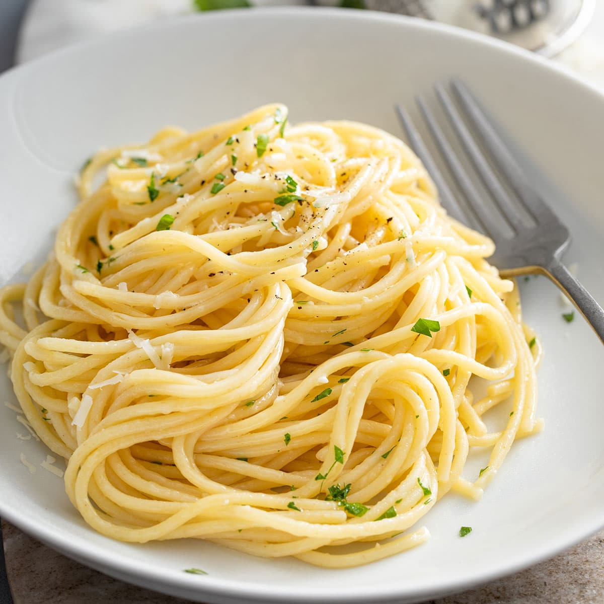

Vodka sauce pasta is a popular dish that typically consists of pasta (such as penne or rigatoni) coated in a creamy tomato-based sauce that has been infused with vodka. The sauce is typically made by sautéing onions and garlic in butter or oil, then adding crushed tomatoes, cream, and vodka. The sauce is simmered until thickened, then tossed with cooked pasta and often garnished with grated Parmesan cheese and fresh basil. Vodka sauce pasta is a rich and flavorful dish that is often served as a main course.

Garlic and butter are often used as a flavor combination for pasta because they complement each other well. Garlic has a strong, pungent flavor that adds depth and complexity to dishes, while butter is rich and creamy, helping to balance and smooth out the flavor of the garlic.

Spaghetti and meatballs is a classic Italian-American dish that consists of tender meatballs made from a mixture of ground beef, breadcrumbs, eggs, and seasonings, served over a bed of spaghetti pasta. The meatballs are often browned in a pan and then simmered in a flavorful tomato sauce, which is also served over the spaghetti.